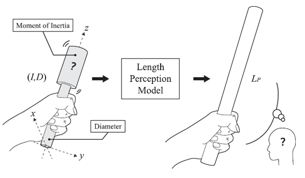
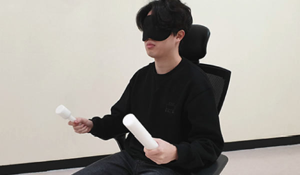
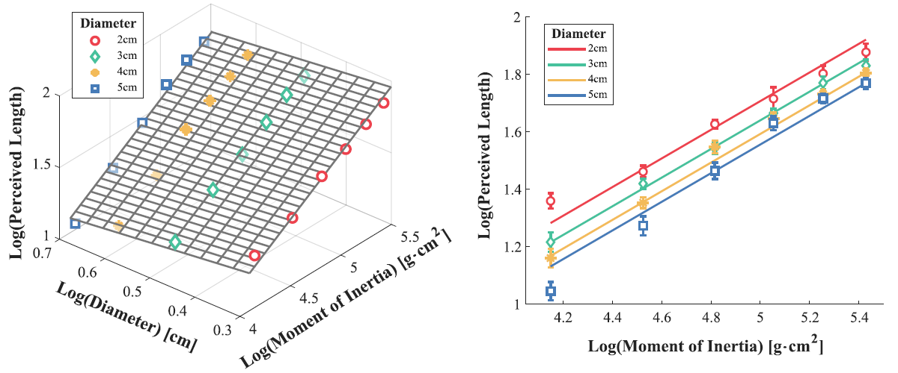

LENGTH PERCEPETION MODEL
Length perception model for the VR controller
Length Perception Model for Hand-held Controllers: The Effects of Diameter and Inertia
IEEE Transactions on Haptics, Vol. 14, no. 2. 2021
ABSTRACT
Typical handheld controllers for interaction in virtual reality (VR) have fixed shapes and sizes, regardless of what visual objects they represent. Resolving this crossmodal incongruence with a shape-changing interface is our long-term goal. In this paper, we seek to find a length perception model that considers the moment of inertia (MOI) and diameter of a handheld object based on the concept of dynamic touch. Such models serve as a basis for computational algorithms for shape changing. We carried out two perceptual experiments. In Experiment 1, we measured the perceived lengths of 24 physical objects with different MOIs and diameters. Then we obtained a length perception model to reproduce the desired perceived length with a handheld controller. In Experiment 2, we validated our model in a crossmodal matching scenario, where a visual rod was matched to a haptic rod in terms of the perceived length. Our results contribute to understanding the relationship between the perceived length and physical properties of a handheld object and designing shape-changing algorithms to render equivalent visual and haptic sensory cues for length perception in VR.
FULL CITATION
Chaeyong Park, Jinsoo Kim, and Seungmoon Choi. Length Perception Model for Hand-held Controllers: The Effects of Diameter and Inertia. IEEE Transactions on Haptics, vol. 14, no. 2. 2021
FIGURES

Length perception model estimating the perceived length of a handheld controller using its diameter (D) and moment of inertia (I) as input variables.

A participant wielded the reference and comparison rods with the two hands without visual cues to build a length perception model.

Results of Experiment 1. (Left) The length perception model in a 3D plot. (Right) 2D plots. Error bars represent standard errors. The length perception model indicates that the perceived length increases as the MOI I increases if the handle diameter D is fixed. In additions, for fixed I, the perceived length decreases as D increases.